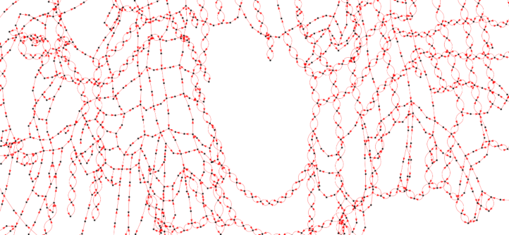
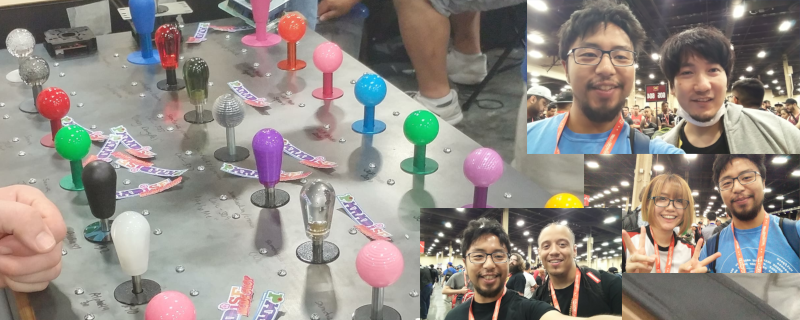
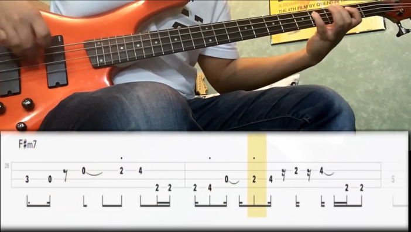

I'm Juan Carlo Rebanal,
and I hope we can meet one day.
Currently seeking a full-time position.
About Juan Carlo

I'm graduating in March 2020 with my Master of Science in Electrical and Computer
Engineering from UCLA. My graduate education and thesis focused on machine learning.
I'm currently looking for a full-time position as a machine learning engineer or
software engineer. In particular, I'm most interested in the areas of deep
reinforcement learning and computer vision. My thesis presents a method for
self-driving cars to localize without the need for GPS information by using
common landmarks such as fire hydrants or trash cans.
I resonate deeply with the fighting game genre of video games and am actively involved
in the UCLA fighting game community. The competitive spirit underpinned by the constant
search for self-improvement and self-understanding keep fighting games close to my heart.
I do my part to foster a productive environment
that facilitates the growth of everyone in the club by being a thoughtful competitor,
organizer and teacher.
Music is another long-standing passion of mine; I am on the journey of learning to
express myself one-to-one using the guitar and piano.
Projects & Experience
Projects

Using real landmark data from Washington D.C., this is a simulation pipeline to demonstrate feasibility of self-localization of a vehicle traversing the given area by encoding street segments based on their respective landmarks.
Project [Lo]gical [Fi]tness consists of a Hexiwear, a wearable IoT device, Raspberry Pi, and a 1D convolutional neural network trained using Keras and implemented in an Android app using TensorFlow Lite and Android Studio. Together, heart rate variability measured from the Hexiwear and accelerometer data from the user's smartphone allow for the estimation of mood and cadence, respectively. Using this information together allows for an efficient look-up of an augmented dataset consisting of songs quantified by their emotional content, retrieving the most fitting song for the user in real-time.
Presented as a final class project a research paper about a generalization of vanilla dropout based on the information theoretic basis of the information bottleneck principle of interpreting neural networks. By including multiplicative noise that is a function of the input, information dropout can improve image classifier performance on datasets of smaller size.
Together with a partner, we wrote a scribe note concerning structural risk minimization and non-uniform learnability in the context of statistical machine learning. This note is a summary of lecture discussions from the graduate course, Fundamentals of Statistical Machine Learning.
Presented to a reinforcement learning reading group at UCLA a paper on deep reinforcement learning concerning the definition of a quantity capturing the expected local improvement that might be attained when new actions are added to the action space of a given state. By determining the states that could stand to receive the most improvement, human experts can be better informed of where to insert actions for the agent to better learn the space.
Written in Python using only NumPy, a 3-layer fully-connected neural network was implemented. This basic library includes batch normalization, optimizers like Adam, backpropagated gradient calculation and loss function implementation. Writing all operations with matrix operations was a great learning experience. The network itself functions as a relatively precise classifier when trained and tested on the CIFAR-10 dataset.
Used NLP techniques such as lemmatization and stemming in combination with dimensionality reduction techniques like latent semantic indexing and non-negative matrix factorization to extract semantics from various emails in the dataset. Using logistic regression, classified 8 categories of articles, 4 of which belonged to 1 group of topics and the other 4 belonging to another group, with 97.5% accuracy.
Using linear programming techniques and CvxPy, implemented prototype selection in a large dataset to reduce computational cost of following operations.
Undergraduate capstone design project. WiFi activity broadcasted by various devices, with respect to user privacy, was collected by a WiFi antenna connected to a Raspberry Pi. A connected laptop processed and visualized the activity data in real-time using Python visualization packages.
Made a heavy quadcopter by throwing parts together, and took it for its maiden and final flight.
Using a 1/4" jack, an electric guitar's signal can be read by the Arduino where the uploaded sketch compares the frequency of the signal received to a lookup table, returning the resulting pitch and whether the input signal is flat or sharp via seven-segment LED.
Experience
Working on my thesis with primary applications in autonomous vehicle navigation. My thesis aims to make navigation and localization more robust to missing information. By utilizing a dataset containing information about the locations of common landmarks such as trees and fire hydrants, street segments are encoded based on adjacent landmarks. Developing an algorithm to efficiently encode and decode such informations to localize even with observation errors. Implementing using Python and Jupyter Notebook.
Developed a multi-abstraction-level question-answer system for algorithms to educate users of any technical background. Designed, executed, and analyzed Wizard of Oz experiments to test the system feasbility. The 18-user study showed that the system answered 87.3% of their questions about the algorithm.
Used ESP32 BLE/WiFi development boards to develop a de-centralized proximity sensor system. Built off ideas from the LEACH family of sensor clustering algorithms. Led a team of 2 other undergraduate students in research direction and implementation.
Assisted with developing a physical-level network usage monitoring system. Over an Ethernet BASE100-TX connection, nominal and effective data rates were measured. Crafted a special packet that would render the otherwise un-observable (with available hardware) test packets to be observable.
Coursework
- Linear programming
- Information theory
- Embedded systems
- Large-scale data mining
- Deep learning and neural networks
- Large-scale network analysis
- Fundamentals of statistical machine learning
- Stochastic processes
- Linear algebra
- Software systems
- Differential equations and vector calculus
- Algorithms and data structures
- Field theory
- Electronic circuits
- Discrete math
- Microprocessor systems
- Electromagnetics
- Signals and systems
- Probability
- Communication systems
- Control systems
- Object-oriented analysis and design
- Digital signal processing
- Digital image processing
- Computer organization and architecture
- Multimedia systems
- Optical communication
Fighting Games

Community Involvement
Handles various affairs including tournament organization to help facilitate a more streamlined and open environment.
Selected Tournament Results
Music

- Gathers Under Night... (Character Select Theme of UNDER NIGHT IN-BIRTH Exe:Late) by Raito
- 出会い (Encounter) by Shoji Meguro
- Rave On by Masafumi Takada
- Fortune's Delight
- Dancing Queen by Abba (Band cover by 元気食堂 Genki Shokudo)
- Life Goes On by Shoji Meguro (Bass guitar)
- Butterfly Kiss by Shoji Meguro (Piano)
- 出会い (Encounter) by Shoji Meguro (Piano)
- Animal Spirits by Vulfpeck (Piano)
- Welcome to Vulf Records by Vulfpeck (Piano)
- Beautiful Lie by Masafumi Takada (Piano)
- Fallen Down (Reprise) by Toby Fox (Piano)
- Corner of Memories by Shoji Meguro (Piano)
Resume & Contact
Click here to view my resume.
If you would like to get in touch, feel free to
send an email to me at:
jcrebanal17[at]gmail[dot]com
Thanks for your time, and take care of yourself.